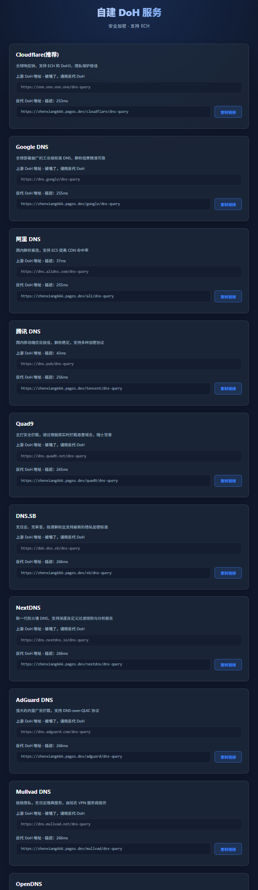

DoH 自建方案
方案 1：官方 Gateway 直连
1
访问 Cloudflare
点击 https://dash.cloudflare.com/ 进入 Cloudflare 管理面板
2
进入路径
通过左侧导航栏依次找到：
保护和连接 – Zero Trust – 网络 – 解析程序和代理 – 添加位置
保护和连接 – Zero Trust – 网络 – 解析程序和代理 – 添加位置
3
创建并获取链接
随便输入一个名称 – 勾选 DoH – 点击继续 – 点击完成 – 复制 DoH 链接 - 关闭代理的情况下测试你的本地网络是否能通 "ping 换成你的.cloudflare-gateway.com"

方案 2：反代多合一部署
点击 下载 JS 脚本，将 zip 压缩包上传至 Cloudflare Pages 进行部署。
部署完成后，直接访问 Pages 自动分配的域名，即可查看多合一反代 DoH 地址列表。注意：由于是反代，会消耗每日请求用量(总量10万)，一次解析消耗用量2(客户端1次+请求上游1次)，消耗完之后会导致反代DoH不可用，进而导致开启了ECH的节点不可用！
